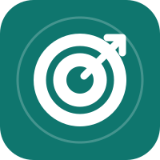
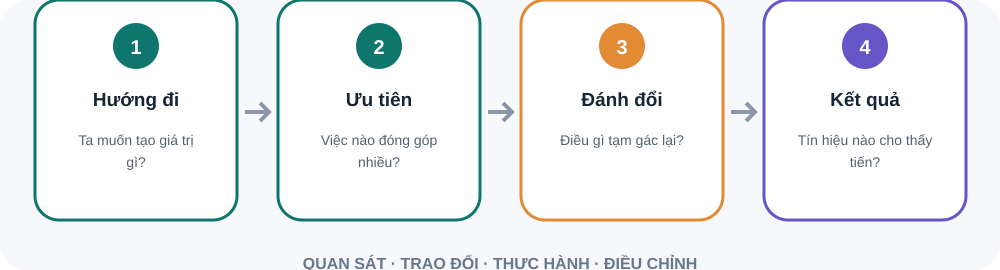

Xác định khách hàng hoặc đối tượng nào được phục vụ.
Nêu nhóm hỗ trợ mục tiêu chung theo cách nào.
Chọn điều sẽ ưu tiên và điều chưa làm trong giai đoạn này.
Viết điều cần thay đổi theo cách quan sát được.
Nêu ai làm gì và ai quyết định.
Biết người liên quan quan tâm đến kết quả nào.
Giải thích đề xuất đóng góp cho mục tiêu chung.
Mời người khác góp ý trước khi chốt cách thực hiện.
Tìm hiểu mục tiêu và áp lực của nhóm khác.
Chia sẻ thông tin, chuyên môn hoặc hỗ trợ thiết thực.
Trao đổi thường xuyên với người có chuyên môn liên quan.
Chủ động giúp đỡ và chia sẻ kiến thức hữu ích.
Không hứa thay người khác; theo đến cùng phần việc đã nhận.
Hỏi mục tiêu và khó khăn hiện tại của nhóm kia.
Thiết kế cách phối hợp tạo giá trị cho cả hai bên.
Thống nhất người, nguồn lực và mốc xem lại.
Mục tiêu nhóm có ý nghĩa khi người làm hiểu vì sao việc được chọn, việc nào chưa làm và kết quả nào cần quan sát.

Mỗi ưu tiên cần liên hệ rõ với hướng đi chung.
Thiếu đánh đổi dễ thành danh sách mong muốn.
Nguồn: Harvard Business School · Strategy Explained
Sơ đồ tóm tắt bốn bước. Mục tiêu nhóm có ý nghĩa khi người làm hiểu vì sao việc được chọn, việc nào chưa làm và kết quả nào cần quan sát. Kiểm tra phù hợp: Mỗi ưu tiên cần liên hệ rõ với hướng đi chung. Nói điều chưa làm: Thiếu đánh đổi dễ thành danh sách mong muốn.
Liệt kê người sử dụng, vận hành, phê duyệt.
Nêu lợi ích, rủi ro, điều chưa chắc.
Ai cần tham gia sớm và câu hỏi nào?
Hỏi từng nhóm điều họ cần bảo vệ, dữ liệu còn thiếu và quyết định thuộc thẩm quyền của họ. Ghi lại mối phụ thuộc, mời người liên quan trước khi chốt kế hoạch.
Phòng thực hành: vẽ bản đồ bên liên quan. Tình huống: Thay đổi quy trình cần phối hợp giữa vận hành, tài chính và chăm sóc khách hàng. Mỗi nhóm có mối quan tâm và quyền quyết định khác nhau.. Hãy tự nêu dữ kiện, rủi ro và hành động đầu tiên trước khi mở gợi ý xử lý.
Chuyển chiến lược thành kết quả và đánh đổi rõ ràng.
Tìm hiểu mục tiêu của cấp trên, đồng cấp và nhóm.
Nêu nhu cầu, căn cứ và hành động cần quyết định.